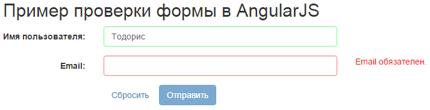
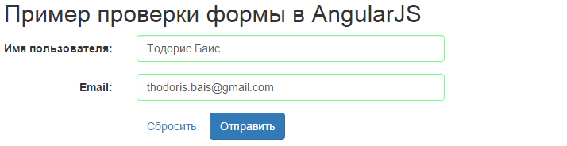

Проверка формы в AngularJS
Одним из преимуществ AngularJS является простота, которую он предлагает для проверки форм. Пример ниже демонстрирует простой путь для внедрения проверки на стороне клиента используя свойства форм AngularJS.
Предположим, у нас есть форма с двумя полями — именем пользователя, адресом электронной почты и двумя кнопками — одна для сброса, а другая для отправки формы. Идея нашего примера состоит в том, что оба поля формы обязательны, поэтому форма не может быть отправлена, если любое из полей пустое или содержит неверный формат (например, электронной почты).
Страница представления
Лучший способ воспользоваться возможностями Angular для проверки формы — это присоединение контроллера к нашей форме.
index.html
<!DOCTYPE html>
<html>
<head>
<link rel="stylesheet" href="https://maxcdn.bootstrapcdn.com/bootstrap/3.3.5/css/bootstrap.min.css">
<script src="https://ajax.googleapis.com/ajax/libs/angularjs/1.2.26/angular.min.js"></script>
<script src="script.js"></script>
<link rel="stylesheet" href="style.css" >
</head>
<body>
<h2>Пример проверки формы в AngularJS</h2>
<form ng-controller="validationCtrl" name="sampleForm" novalidate>
<label>Имя пользователя:</label>
<input type="text" class="form-control" name="username" ng-model="username" required>
<span ng-show="sampleForm.username.$error.required">Имя пользователя обязательно.</span>
<label>Email:</label>
<input type="email" class="form-control" name="email" ng-model="email" required>
<span ng-show="sampleForm.email.$error.required">Email обязателен.</span>
<span ng-show="sampleForm.email.$error.email">Неверный адрес.</span>
<button class="btn btn-link" ng-click="reset()">Сбросить</button>
<input type="submit" class="btn btn-primary" ng-disabled="sampleForm. $invalid" ng-click="checkData()">
</form>
</body>
</html>Как понятно из определения <head>, мы решили разделить HTML на JavaScript и CSS.
Строка 11 объявляет, что наша форма прикреплена к validationCtrl и да, ваше предположение верно, script.js будет содержать логику контроллера, который только обрабатывает кнопки нашей формы.
Типичный процесс проверки на стороне клиента содержит сообщения об ошибках, за исключением случаев неверных (адрес электронной почты) или пустых полей ввода.
В Angular есть дискретные состояния формы такие как $dirty или $invalid, соответственно, для проверки взаимодействия пользователя с формой и для проверки неверных полей ввода. Чтобы узнать больше о свойствах форм обратитесь к официальной документации.
Как правило, это означает, что нам частично нужны дополнительные сообщения, которые станут отображаться в нашем приложении. AngularJS предлагает директиву ng-show для этой цели, которая в сочетании с состояниями формы показывает результаты проверки на стороне клиента. Строки 14 и 17-18 осуществляют проверку в стиле AngularJS.
Мы хотим чтобы наша кнопка для отправки формы была заблокирована, пока форма неверная (строка 20). AngularJS предлагает директиву ng-disabled, чтобы сделать это возможным.
Наконец, мы объясняем нашему контроллеру что хотим запустить специальную функцию для каждой кнопки формы с помощью директивы ng-click.
Работа контроллера
Когда наша форма содержит корректное состояние, кнопка отправки становится доступной. Предположим, что существуют предустановленные корректные имя пользователя и адрес электронной почты из веб-приложения и что это цель кнопки сброса: вернуть нашу форму к приемлемому формату. С другой стороны, кнопка отправки должна проверять, что форма содержит корректные данные.
Соответственно в AngularJS клеем между контроллером приложений и представлением выступает объект $scope.
script.js
function validationCtrl($scope) {
var validUsername = "Тодорис Баис";
var validEmail = "thodoris.bais@gmail.com";
$scope.reset = function(){
$scope.username = validUsername;
$scope.email = validEmail;
}
$scope.checkData = function() {
if ($scope.username != validUsername || $scope.email != validEmail) {
alert("Предоставленные данные не совпадают с владельцем по умолчанию");
} else {
alert("Вроде нормально!");
}
}
}Демонстрация
Давайте запустим наше приложение.

Рис. 2.1. Первоначальный скриншот приложения
Если оставить поле для электронной почты пустым, то работает ng-show.

Рис. 2.2. Поле не может быть пустым
Подставив корректные входные данные мы сразу заметим, что кнопка Отправить становится доступной (оба поля должны быть с зелёной рамкой).

Рис. 2.3. Введены корректные данные
Скачать
Вы можете скачать полный исходный код этого примера здесь: angularjs_form_validation.zip.